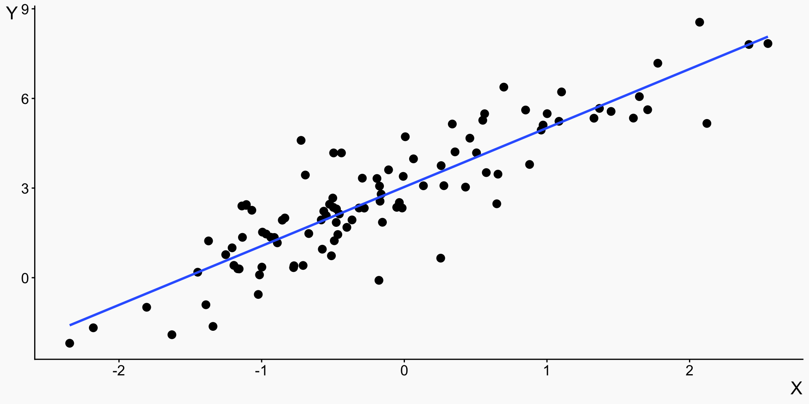
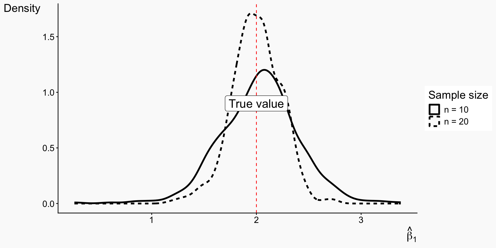
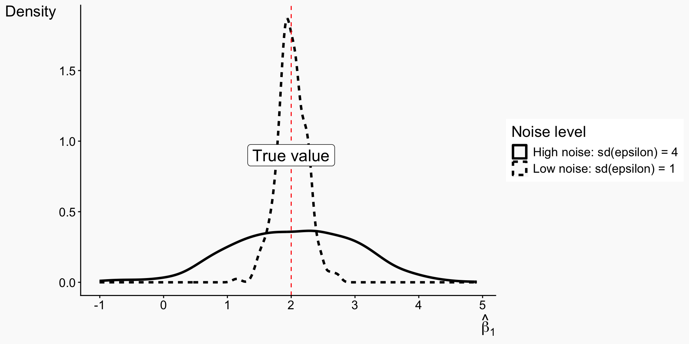
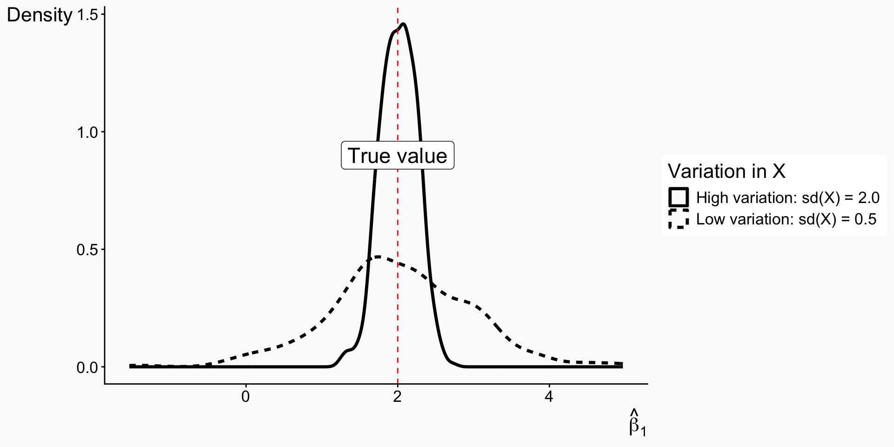
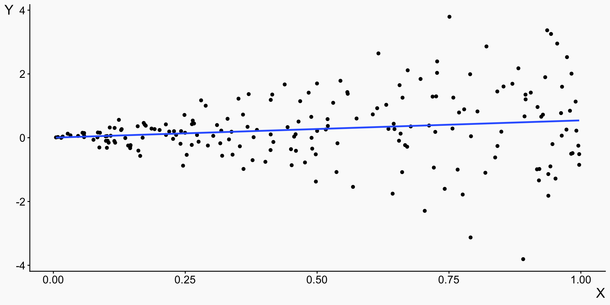
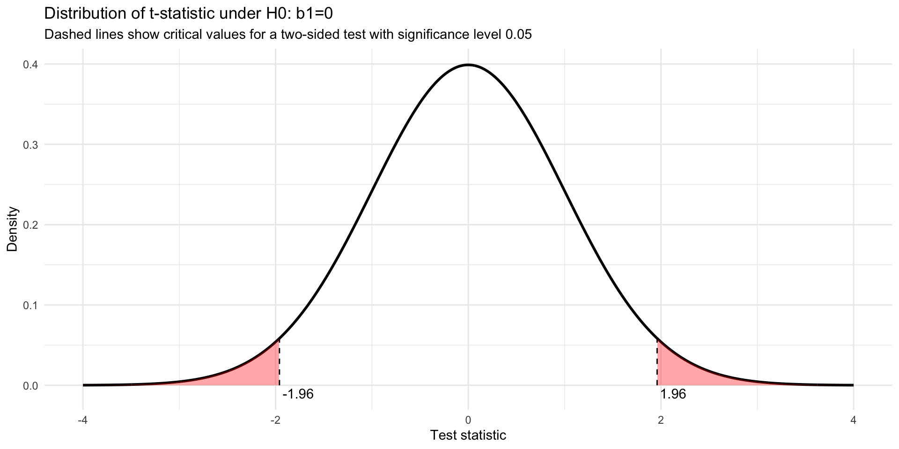
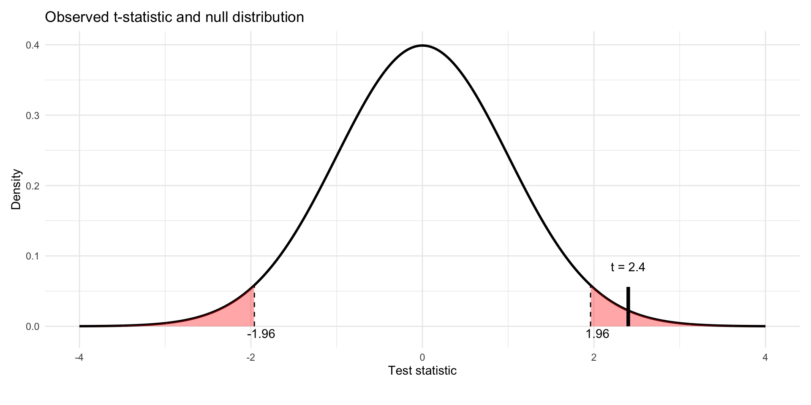
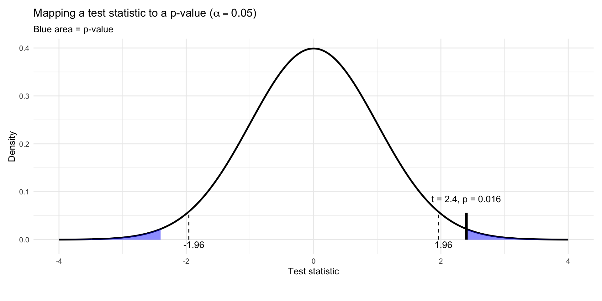

Introduction to Health Analytics
Linear Regression: Uncertainty and Hypothesis Testing
Dr. Sam Burn
Course road map
| Lecture | Topic |
|---|---|
| 1 | Introduction to health data & R |
| 2 | Data visualization |
| 3 | Data wrangling & exploratory data analysis |
| 4 | Causal inference |
| 5 | Linear regression |
| 6 | Linear regression: uncertainty & hypothesis testing |
| 7 | Panel data: difference-in-differences & fixed effects |
| 8 | Limited dependent variables: LPM, logit, probit |
| 9 | Introduction to machine learning for health analytics |
| 10 | Course review |
The health analytics pipeline

Linear regression: sampling variation
Where we are in the course
- You have already seen:
- Ordinary Least Squares (OLS)
- How to run a regression in R
- How to interpret coefficients
- Today we go deeper on:
- What regression coefficients mean
- Why estimates vary across samples
- How hypothesis testing works in regression
- How to interpret uncertainty in applied work
Recap
- Ordinary least squares fits a straight line to explain the relationship between 2 or more variables
- It picks the straight line that minimizes the sum of squared residuals
- That line has an intercept \beta_0 (Our prediction \widehat{Y} when X = 0) and a slope \beta_1
- The residual is the difference between our prediction \widehat{Y} = \widehat{\beta}_0 + \widehat{\beta}_1X and the actual number Y
Y = \beta_0 + \beta_1 X + \varepsilon \widehat{Y} = \widehat{\beta}_0 + \widehat{\beta}_1X
Error
- We posit that there is a true data-generating process Y = \beta_0 + \beta_1 X + \varepsilon
- The parameters \beta_0 and \beta_1 are fixed but unknown
- Our goal is to learn about these unknown parameters
- The estimates \widehat{\beta}_0 and \widehat{\beta}_1 are our best guesses at what those true parameters are
- The difference between our estimate \hat{\beta}_1 and the actual true \beta_1 is the error
- There are two main sources of error in our estimates:
- Bias: Systematic deviation from the true parameter. We talked about this last time!
- Sampling variation: Random differences across samples. Present even under a correctly specified model. This is the subject of today’s lecture
Sampling Variation
- Even if the model is correct, different random samples of data will give different \widehat{\beta}_0 and \widehat{\beta}_1
- The variation in \widehat{\beta}_0 and \widehat{\beta}_1 that occur purely because of that random sampling is called sampling variation.
Sampling Variation
- Let’s simulate data so we can understand what drives sampling variation
- The true data-generating process is Y_i = 3 + 2X_i + \varepsilon_i,\qquad \varepsilon_i \sim N(0,\sigma^2)
- We begin with one sample of n=100 observations and estimate OLS:
- \widehat{\beta}_0 will generally be close to 3
- \widehat{\beta}_1 will generally be close to 2
- but not exactly equal, because we have sampling noise
Sampling Variation
Sampling Variation
- Take a random subsample of the data with n=20 observations and estimate \widehat{\beta}_1
- Do this many times and plot the distribution of the \widehat{\beta}_1 estimates
Sampling distributions
- Because we work with samples, OLS coefficients (e.g. \widehat{\beta}_1) are random variables
- Repeated samples from the same population produce a sampling distribution for \widehat{\beta}_1
- Under standard assumptions:
- this sampling distribution is approximately normal
- the approximation improves as sample size increases (Central Limit Theorem)
- If the estimator is unbiased:
- the center of the distribution is the true parameter value \beta_1
- The spread of the sampling distribution (the standard error) depends on:
- sample size (n)
- noise in outcomes (\varepsilon)
- variation in X
Distribution of OLS coefficient
Under standard regularity conditions, the OLS slope estimator has the sampling distribution \widehat{\beta}_1 \;\sim\; N\!\left(\beta_1,\; \frac{\sigma^2_\varepsilon}{N \times \operatorname{Var}(X)}\right)
The mean of the sampling distribution is the true parameter \beta_1 (unbiased)
The standard deviation of the sampling distribution of \hat{\beta}_1 is called the standard error
Standard error:
- decreases with sample size N
- decreases with variation in the regressor \operatorname{Var}(X)
- increases with variation in the error term \sigma^2_\varepsilon
- decreases with sample size N
In general we don’t know \sigma^2_\varepsilon so we estimate is using the residuals from the regression: \widehat{\sigma}^2_\varepsilon = \frac{1}{N-k}\sum_{i=1}^N \widehat{\varepsilon}_i^2 where k is the number of estimated parameters (including the intercept)
Large vs small samples
- Now we take small random subsamples of size n=10 and n=20
- Larger n produces a tighter distribution around the true value

Noise in \varepsilon: high vs low variance
- We hold the sample size fixed at n=20 and vary only the amount of idiosyncratic noise.
- Higher variance in \varepsilon means outcomes are “noisier” conditional on X.
- Larger noise in \varepsilon produces a wider sampling distribution of \widehat{\beta}_1.

Variation in X: high vs low variance
- We again hold the sample size fixed at n=20 and hold \text{Var}(\varepsilon) fixed.
- Now we vary the amount of variation in X across individuals.
- More variation in X makes \beta_1 easier to estimate, producing a tighter sampling distribution of \widehat{\beta}_1.

Getting standard errors right: heteroskedasticity and clustering
Heteroskedasticity
- If the variance of the error term is different for different values of X, then we have “heteroskedasticity”
- Notice in the below graph how the spread of the points around the line (the variance of the error term) is bigger for larger values of x

Heteroskedasticity-robust standard errors
- Correct for this using heteroskedasticity-robust standard errors:
- This does not change the point estimates of \widehat{\beta}!
- Reweights how much each observations contributes to our uncertainty about \widehat{\beta}
- Observations with large residuals contribute more to estimated uncertainty!
- We can implement this in R using
feols()from the fixest package:- built-in support for robust and clustered standard errors
- easy inclusion of fixed effects (next topic)
reg
Dependent Var.: Y
Constant 0.0023 (0.0820)
X 0.5410* (0.2550)
_______________ ________________
S.E. type Heterosked.-rob.
Observations 200
R2 0.02450
Adj. R2 0.01958
---
Signif. codes: 0 '***' 0.001 '**' 0.01 '*' 0.05 '.' 0.1 ' ' 1Correlated and Clustered Errors
So far, we have assumed that error terms are independent across observations
If errors are correlated with each other, the usual OLS standard errors are wrong
This can happen if:
- Clustering: observations share a common environment (e.g. people in the same town, students in the same school) \rightarrow errors correlated within groups
- Time series / panels: shocks persist over time \rightarrow errors may be correlated across time (autocorrelation)
Correlation in errors does not bias the OLS coefficients but it does affect how much independent information the data contain
For clustered data, we can implement cluster-robust standard errors in
feols()
Hypothesis Testing
What Is Hypothesis Testing?
Hypothesis testing provides a formal framework for determining whether observed patterns in data are plausibly due to sampling variation, or whether they constitute evidence against a benchmark assumption
The basic components of a hypothesis test are:
- A null hypothesis (H0)
- An alternative hypothesis (H1)
- A test statistic
- A reference (null) distribution
- A decision rule
Null and Alternative Hypotheses
- The null hypothesis (H0) is a precise statement about a parameter, typically representing no effect or no difference.
- The alternative hypothesis (H1) represents a competing claim
- Example:
- H0: \beta_1 = 0
- H1: \beta_1 \neq 0
- The hypothesis testing logic is:
- Assume the null hypothesis is true
- Derive the distribution of an estimator under that assumption
- Ask how likely the observed estimate would be under this distribution
- Reject the null if the observation is sufficiently unlikely
- “Unlikely” is defined using a significance threshold.
Significance Levels
- The significance level \alpha is the probability of rejecting a true null hypothesis.
- Common choices: \alpha = 0.01, \alpha = 0.05, \alpha = 0.1 (often written as 1%, 5% and 10%)
- The p-value is defined as: \text{p-value} = \Pr\left( \text{observing data at least as extreme as what we saw} \middle| H_0 \right)
- A small p-value means the observed data would be unlikely if H_0 were true
- We reject H_0 when the p-value is below a chosen significance level
- Note: The p-value is not the probability that the null hypothesis is true
Type I and Type II errors, and power
- A Type I error occurs when we reject a true null hypothesis
- Its probability is the significance level \alpha
- A Type II error occurs when we fail to reject a false null hypothesis
- There is an inherent trade-off between these errors: reducing the probability of Type I error generally increases the probability of Type II error.
- Statistical power is the probability of correctly rejecting the null hypothesis when it is false
- Power depends on:
- The true effect size
- Sample size
- Variability in the data
- The chosen significance level
Hypothesis Testing in Regression
Hypothesis Testing in Regression
- Consider the linear regression model: Y_i = \beta_0 + \beta_1 X_{1i} + \beta_2 X_{2i} + \varepsilon_i
- Hypothesis testing typically concerns claims about one or more of the \beta coefficients in then model e.g.:
- Testing whether a single coefficient equals a specific value (e.g. H_0:\ \beta_1 = 0)
- Testing whether several coefficients are jointly zero (e.g. H_0:\ \beta_1 = \beta_2 = 0)
- Testing linear restrictions across parameters (e.g. H_0:\ \beta_1 + \beta_2 = 1)
- These hypotheses are typically evaluated using t-tests (for single restrictions) or F-tests (for multiple restrictions).
The t-statistic
- For a single coefficient, we compute the t-statistic:
t = \frac{\widehat{\beta}_1 - \beta_1^{H_0}}{\mathrm{SE}(\widehat{\beta}_1)}
- \beta_1^{H_0} is the null value (usually 0)
- \mathrm{SE}(\hat{\beta}_1) is the standard error
- The t-statistic measures how far the estimate lies from the null value, measured in standard error units
- Large absolute values provide evidence against the null hypothesis
From t-statistics to p-values
- The p-value is the probability, under H_0, of observing a test statistic at least as extreme as the one observed.
- For a two-sided test: p = 2 \times P(|T| \ge |t_{\text{obs}}|)
- For a one-sided test with H_1:\ \beta_1 > \beta_1^{H_0} (right-tailed test): p = P(T \ge t_{\text{obs}})
- To get this, we need to know the distribution for the test statistic under the null hypothesis!
- Under the null hypothesis, for large samples the t-statistic has a standard normal distribution!
The null distribution
- Curve is the distribution of the t-statistic under the nulll hypothesis H0: \beta_1=0
- Dashed are the critical values for significance level \alpha=0.05:
- split the distribution so that only fraction \alpha=0.05 is in the red areas
- \alpha=0.05/2 in each tail for a two sided test
- red areas are outcomes that would be very unlikely if the null were true

Comparing the t-statistic to the critical value
- For a two-sided test, reject the null hypothesis if absolute value of the t-statistic is greater than the critical value!

Visualizing the p-value
- Blue shaded area shows the p-value: the probability, under the null hypothesis, of observing a test statistic at least as extreme as the one obtained

Why do we use the t-distribution instead of the normal?
- Under standard assumptions \widehat{\beta}_1 is approximately normally distributed
- Variance depends on the variance of the error term!
- In practice we don’t know this and have to estimate it from the data
- If we knew variance of the error term, coefficient estimates would follow the Normal distribution
- Because we are estimating the variance of the error term with the residuals, there is extra uncertainty so we use the t-distribution instead of the normal
- t-distribution has “fatter tails”
- higher chance of drawing an extreme value
- As sample size grows, the t-distribution converges to the normal!
- Rule of thumb: we often use 1.96 as the critical value for a two-sided 5% test, but this is only exact in large samples
- In smaller samples, the appropriate critical value comes from a t-distribution and is larger than 1.96
Confidence Intervals and Hypothesis Tests
- A 95% confidence interval for \widehat{\beta}_1 is: \widehat{\beta}_1 \pm 1.96 \times \mathrm{SE}(\hat{\beta}_1)
- A two-sided test at the 5% level rejects H_0: \beta_1 = 0 if and only if this interval excludes 0.
Joint Hypotheses and the F-test
- Often we want to test multiple restrictions simultaneously.
- Example: H_0: \beta_2 = 0 \text{ and } \beta_3 = 0
- These are tested using an F-statistic:
F = \frac{(RSS_r - RSS_u)/q}{RSS_u/(n - k)}
- RSS denotes residual sum of squares (i.e. \sum \widehat{\varepsilon}^2)
- RSS_r is the restricted model RSS (null hypothesis restrictions imposed)
- RSS_u is the unrestricted model RSS (model with all regressors)
- q is the number of restrictions
- n is sample size
- k is number of parameters
- The F-test evaluates whether imposing the restrictions significantly worsens model fit
- Large values indicate the restrictions are inconsistent with the data
Implementing Hypothesis Tests in R
Implementing Hypothesis Tests in R
- The standard R regression output automatically reports two most common hypothesis tests:
- t-tests for individual coefficients: For each coefficient, R tests H_0: \; \beta_j = 0 and reports t-statistic and p-value
- Overall F-test for the model: F-statistic at the bottom tests H_0: \; \beta_1 = \beta_2 = ... = 0 and reports F-statistic and p-value ::: {.fragment}
Call:
lm(formula = sbp ~ exercise + age, data = dat)
Residuals:
Min 1Q Median 3Q Max
-22.2189 -5.7923 -0.1412 5.4813 25.8231
Coefficients:
Estimate Std. Error t value Pr(>|t|)
(Intercept) 118.708574 1.524621 77.861 < 2e-16 ***
exercise -0.023378 0.005414 -4.318 1.84e-05 ***
age 0.241833 0.022483 10.756 < 2e-16 ***
---
Signif. codes: 0 '***' 0.001 '**' 0.01 '*' 0.05 '.' 0.1 ' ' 1
Residual standard error: 8.367 on 597 degrees of freedom
Multiple R-squared: 0.2205, Adjusted R-squared: 0.2179
F-statistic: 84.44 on 2 and 597 DF, p-value: < 2.2e-16:::
Implementing Hypothesis Tests in R
- You can extract various components of the test as follows:
Linear Hypotheses in R
- How about other possible hypothesis tests?
- null hypotheses other than zero
- restrictions on combinations of coefficients e.g. \beta_1+\beta_2=0
- Implement using
linearHypothesis(), part of thecarpackage - Example: single linear restriction \beta_{ex} \neq -1
- But can just input any equation!!
Lecture takeaways
- Sampling variation: the same DGP gives different \widehat{\beta} across samples — standard errors quantify this
- What drives \mathrm{SE}(\widehat{\beta}):
- Bigger sample n → smaller SE
- More variation in X → smaller SE
- Less noise in \varepsilon → smaller SE
- Heteroskedasticity Use heteroskedasticity-robust SEs in practice (and cluster SEs when errors are correlated within groups)
- Hypothesis testing in regression:
- t = (\widehat{\beta} - \beta_{H_0}) / \mathrm{SE}(\widehat{\beta})
- p-value = probability of seeing a t-statistic this extreme if H_0 is true
- Reject H_0 at level \alpha if |t| > critical value (equivalently, p < \alpha)
- Confidence intervals and t-tests are two views of the same thing
- F-tests evaluate joint restrictions across multiple coefficients
- In R:
lm()reports t-tests automatically; uselinearHypothesis()fromcarfor any other test
Coming next
- Panel data: difference-in-differences and fixed effects
- How to exploit repeated observations of the same units to control for unobserved confounders